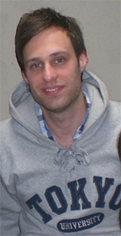
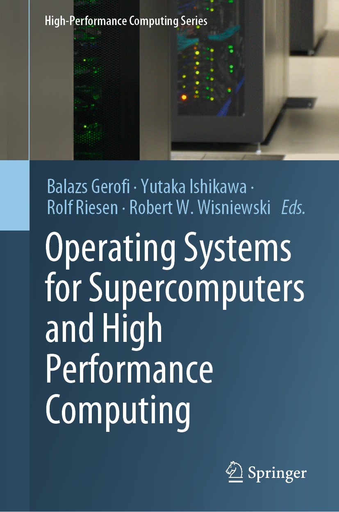

|  |

Balazs Gerofi, Ph.D （バリ ゲローフィ） Senior Research ScientistHigh Performance Artificial Intelligence Systems Research Team RIKEN Center for Computational Science Toranomon Twin Buildings East. 16th floor Toranomon 2−10−1, Minato, Tokyo, JAPAN, 〒105-0001 bgerofi_AT_riken.jp bgerofi_AT_il.is.s.u-tokyo.ac.jp |
Biography
I am Senior Research Scientist in the High Performance Artificial Intelligence Systems Research Team at RIKEN Center for Computational Science. I received my Ph.D of Computer Science from the University Of Tokyo, working under the supervision of Prof. Yutaka Ishikawa. In my thesis I focused on highly available Virtual Machines (VM), aiming at providing high performance and fault-tolerant execution at the same time. Previously, I obtained my Master’s degree (Cum Laude) in Computer Science at the VU University in Amsterdam, where I worked on the Virtual File System (VFS) of the MINIX 3 operating system under the supervision of Prof. Andrew S. Tanenbaum.
Research Interests
My research is mainly focused on system software for parallel and distributed computing. In particular, I am interested in operating systems (kernel architectures, memory management, file systems), high-performance computing (parallel and distributed I/O, communication, resiliency) and virtualization (containers, virtual machines, cloud-computing). Recently, I have been also focusing on scaling Artificial Intelligence and Machine Learning (AI/ML) workloads on supercomputers.
Book(s)
|  |
Our book, titled Operating Systems for Supercomputers and High Performance Computing, provides a historical overview and discusses recent developments of operating systems designed specifically for supercomputing systems. The book is available for purchase at the following online stores: |
Selected Publications
Balazs Gerofi, Kohei Tarumizu and Lei Zhang and Takayuki Okamoto and Masamichi Takagi and Shinji Sumimoto and Yutaka Ishikawa
“Linux vs. Lightweight Multi-kernels for High Performance Computing: Experiences at Pre-Exascale”,
IEEE/ACM International Conference for High Performance Computing, Networking, Storage, and Analysis (SC)
2021, St. Louis, MS, USA
Jun Li, Minjun Li, Zhigang Cai, Francois Trahay, Mohamed Wahib, Balazs Gerofi, Zhiming Liu, Jianwei Liao:
“Intra-page Cache Update in SLC-mode with Partial Programming in High Density SSDs”,
The International Conference on Parallel Processing (ICPP)
2021, Virtual Event, Portland, OR, USA
Edgar A Leon, Balazs Gerofi, Julien Jaeger, Guillaume Mercier, Rolf Riesen, Masamichi Takagi, Brice Goglin:
“Application-Driven Requirements for Node Resource Management in Next-Generation Systems”,
International Workshop on Runtime and Operating Systems for Supercomputers (ROSS),
held in conjunction with the ACM/IEEE International Conference for High Performance Computing, Networking, Storage and Analysis (SC),
2020, Virtual Conference
Jun Li, Bowen Huang, Zhibing Sha, Zhigang Cai, Jianwei Liao, Balazs Gerofi, Yutaka Ishikawa:
“Mitigating Negative Impacts of Read Disturb in SSDs”,
ACM Transactions on Design Automation of Electronic Systems
(2020)
Atsushi Hori, Balazs Gerofi, Yutaka Ishikawa:
“An Implementation of User-Level Processes using Address Space Sharing”,
2020 IEEE International Workshop on Resource Arbitration for Dynamic Runtimes (RADR) held in conjunction with the IEEE International Parallel and Distributed Processing Symposium (IPDPS),
2019, Rio De Janeiro, Brazil
Aleix Roca Nonell, Balazs Gerofi, Leonardo Bautista-Gomez, Dominique Martinet, Vicenç Beltran Querol, Yutaka Ishikawa:
“On the Applicability of PEBS based Online Memory Access
Tracking for Heterogeneous Memory Management at Scale”,
ACM Workshop on Memory Centric High Performance Computing (MCHPC), held in conjunction with the ACM/IEEE International Conference for High Performance Computing, Networking, Storage and Analysis (SC),
2018, Dallas, TX, USA
Atsushi Hori, Min Si, Balazs Gerofi, Masamichi Takagi, Jai Dayal, Pavan Balaji, Yutaka Ishikawa:
“Process-in-Process: Techniques for Practical Address-Space Sharing”,
ACM International Symposium on High-Performance Parallel and Distributed Computing (HPDC),
2018, Tempe, AZ, USA
Best Paper Award
Balazs Gerofi, Aram Santogidis, Dominique Martinet, Yutaka Ishikawa:
“PicoDriver: Fast-path Device Drivers for Multi-kernel Operating Systems”,
ACM International Symposium on High-Performance Parallel and Distributed Computing (HPDC),
2018, Tempe, AZ, USA
Balazs Gerofi, Rolf Riesen, Masamichi Takagi, Taisuke Boku, Yutaka Ishikawa, Robert W. Wisniewski:
“Performance and Scalability of Lightweight Multi-Kernel based Operating Systems”,
IEEE International Parallel & Distributed Processing Symposium (IPDPS),
2018, Vancouver, CA
Tatiana V. Martsinkevich, Balazs Gerofi, Guo-Yuan Lien, Seiya Nishizawa, Wei-keng Liao, Takemasa Miyoshi, Hirofumi Tomita, Yutaka Ishikawa, Alok N. Choudhary:
“DTF: An I/O Arbitration Framework for Multi-component Data Processing Workflows”,
International Conference on High Performance Computing (ISC),
2018, Frankfurt, Germany
Hannes Weisbach, Balazs Gerofi, Brian Kocoloski, Hermann Härtig, Yutaka Ishikawa:
“Hardware Performance Variation: A Comparative Study Using Lightweight Kernels”,
International Conference on High Performance Computing (ISC),
2018, Frankfurt, Germany
Balazs Gerofi, Rolf Riesen, Robert W. Wisniewski and Yutaka Ishikawa:
“Toward Full Specialization of the HPC System Software Stack: Reconciling Application Containers and Lightweight Multi-kernels”,
International Workshop on Runtime and Operating Systems for Supercomputers (ROSS), held in conjunction with
ACM International Symposium on High-Performance Parallel and Distributed Computing (HPDC),
2017, Washington, D.C., USA
Best Paper Award
Takemasa Miyoshi, Guo-Yuan Lien, Shinsuke Satoh, Tomoo Ushio, Kotaro Bessho, Hirofumi Tomita,
Seiya Nishizawa, Ryuji Yoshida, Sachiho A. Adachi, Jianwei Liao, Balazs Gerofi,
Yutaka Ishikawa, Masaru Kunii, Juan Ruiz, Yasumitsu Maejima, Shigenori Otsuka,
Michiko Otsuka, Kozo Okamoto, Hiromu Seko:
“‘Big Data Assimilation’ Toward Post-Petascale Severe Weather Prediction: An Overview and Progress”,
Proceedings of the IEEE 104(11): 2155-2179
(2016)
Balazs Gerofi, Takagi Masamichi and Yutaka Ishikawa:
“Revisiting RDMA Buffer Registration in the Context of Lightweight Multi-kernels”,
22th European MPI Users’ Group Meeting (EuroMPI),
2016, Edinburgh, Scotland
Swann Perarnau, Judicael A. Zounmevo, Balazs Gerofi, Kamil Iskra, Pete Beckman:
“Exploring Data Migration for Future Deep-Memory Many-Core Systems”,
IEEE International Conference on Cluster Computing (CLUSTER),
2016, Taipei, Taiwan
Balazs Gerofi, Yutaka Ishikawa, Rolf Riesen, Robert W. Wisniewski, Yoonho Park and Bryan Rosenburg:
“A Multi-Kernel Survey for High-Performance Computing”,
International Workshop on Runtime and Operating Systems for Supercomputers (ROSS), held in conjunction with
ACM International Symposium on High-Performance Parallel and Distributed Computing (HPDC),
2016, Kyoto, Japan
Jianwei Liao, Balazs Gerofi, Guo-Yuan Lien, Seiya Nishizawa, Takemasa Miyoshi, Hirofumi Tomita and Yutaka Ishikawa
“Toward a General I/O Arbitration Framework for netCDF based Big Data Processing”,
International European Conference on Parallel and Distributed Computing (Euro-Par),
2016, Grenoble, France
Balazs Gerofi, Masamichi Takagi, Gou Nakamura, Tomoki Shirasawa, Atsushi Hori and Yutaka Ishikawa
“On the Scalability, Performance Isolation and Device Driver Transparency of the IHK/McKernel Hybrid Lightweight Kernel”,
IEEE International Parallel and Distributed Processing Symposium (IPDPS),
2016, Chicago, US
Jianwei Liao, Francois Trahay, Balazs Gerofi and Yutaka Ishikawa:
“Prefetching on Storage Servers through Mining Access Patterns on Blocks”,
IEEE Transactions on Parallel and Distributed Systems (TPDS),
2015
Takagi Masamichi, Norio Yamaguchi, Balazs Gerofi, Atsushi Hori and Yutaka Ishikawa:
“Adaptive Transport Service Selection for MPI with InfiniBand Network”,
International Workshop on Exascale MPI (ExaMPI), held in conjunction with ACM/IEEE International Conference for High Performance Computing, Networking, Storage and Analysis (SC),
2015, Austin, TX, USA
Balazs Gerofi, Takagi Masamichi and Yutaka Ishikawa:
“Toward Operating System Support for Scalable Multithreaded Message Passing”,
21th European MPI Users’ Group Meeting (EuroMPI),
2015, Bordeaux, France
Balazs Gerofi, Masamichi Takagi, Yutaka Ishikawa, Rolf Riesen, Evan Powers and Robert W. Wisniewski:
“Exploring the Design Space of Combining Linux with Lightweight Kernels for Extreme Scale Computing”,
International Workshop on Runtime and Operating Systems for Supercomputers (ROSS), held in conjunction with
ACM International Symposium on High-Performance Parallel and Distributed Computing (HPDC),
2015, Portland, USA
Best Paper Award
Rolf Riesen, David N. Lombard, Kurt Ferreira, Robert W. Wisniewski, Arthur (Barney) Maccabe, John (Jack) Lange, Mike Lang, Ron Brightwell, Balazs Gerofi, Kevin Pedretti, Pardo Keppel, Todd Inglett, Yoonho Park and Yutaka Ishikawa:
“What is a Lightweight Kernel?”,
International Workshop on Runtime and Operating Systems for Supercomputers (ROSS), held in conjunction with
ACM International Symposium on High-Performance Parallel and Distributed Computing (HPDC),
2015, Portland, USA
Taku Shimosawa, Balazs Gerofi, Masamichi Takagi, Gou Nakamura, Tomoki Shirasawa, Yuji Saeki, Masaaki Shimizu, Atsushi Hori and Yutaka Ishikawa
“Interface for Heterogeneous Kernels: A Framework to Enable Hybrid OS Designs targeting High Performance Computing on Manycore Architectures”,
IEEE International Conference on High Performance Computing (HiPC),
2014, Goa, India [acceptance rate: 23%]
Balazs Gerofi, Takagi Masamichi and Yutaka Ishikawa:
“Exploiting Hidden Non-uniformity of Uniform Memory Access on Manycore CPUs”,
International Workshop on Multi/Many-Core Computing Systems (MuCoCoS), held in conjunction with Euro-Par International European Conference on Parallel Processing,
2014, Porto, Portugal
Yuki Soma, Balazs Gerofi and Yutaka Ishikawa
“Revisiting Virtual Memory for High Performance Computing on Manycore Architectures: A Hybrid Segmentation Kernel Approach”,
International Workshop on Runtime and Operating Systems for Supercomputers (ROSS), held in conjunction with
ACM/SIGARCH International Conference on Supercomputing (ICS),
2014, Munich, Germany
Balazs Gerofi, Akio Shimada, Atsushi Hori, Takagi Masamichi and Yutaka Ishikawa:
“CMCP: A Novel Page Replacement Policy for System Level Hierarchical Memory Management on Many-cores”,
ACM International Symposium on High-Performance Parallel and Distributed Computing (HPDC),
2014, Vancouver, Canada [acceptance rate: 16%] Best Paper Award
Masamichi Takagi, Yuichi Nakamura, Atsushi Hori, Balazs Gerofi and Yutaka Ishikawa
“Revisiting Rendezvous Protocols in the Context of RDMA-capable Host Channel Adapters and Many-Core Processors”,
20th European MPI Users’ Group Meeting (EuroMPI),
2013, Madrid, Spain
Atsushi Tokuhisa, Junya Arai, Yasumasa Joti, Yoshiyuki Ohno, Toyohisa Kameyama, Keiji Yamamoto,
Masayuki Hatanaka, Balazs Gerofi, Akio Shimada, Motoyoshi Kurokawa, Fumiyoshi Shoji, Kensuke Okada,
Takashi Sugimoto, Mitsuhiro Yamaga, Ryotaro Tanaka, Mitsuo Yokokawa, Atsushi Hori,
Yutaka Ishikawa, Takaki Hatsui and Nobuhiro Go
“High-speed classification of coherent X-ray diffraction patterns on the K computer for high-resolution single biomolecule imaging”,
International Union of Crystallography (IUCr) Journal of Synchrotron Radiation,
2013
Akio Shimada, Balazs Gerofi, Atsushi Hori and Yutaka Ishikawa:
“Proposing a new Task Model towards Many-core Architecture”,
International Workshop on Many-core Embedded Systems (MES), co-located with ISCA’13,
2013, Tel Aviv, Israel
Balazs Gerofi, Akio Shimada, Atsushi Hori and Yutaka Ishikawa:
“Partially Separated Page Tables for Efficient Operating System Assisted Hierarchical Memory Management on Heterogeneous Architectures”,
ACM/IEEE International Symposium on Cluster, Cloud and Grid Computing (CCGRID),
2013, Delft, Netherlands [acceptance rate: 21%] Nominated for Best Paper
Balazs Gerofi, Zoltan Vass and Yutaka Ishikawa:
“Utilizing Memory Content Similarity for Improving the Performance of Highly Available Virtual Machines”,
ELSEVIER International Journal of Future Generation Computer Systems (FGCS),
2013 [extended version of the UCC’11 paper]
Balazs Gerofi, Akio Shimada, Atsushi Hori and Yutaka Ishikawa:
“Towards Operating System Assisted Hierarchical Memory Management for Heterogeneous Architectures”,
ACM/IEEE International Conference for High Performance Computing, Networking, Storage and Analysis (SC),
2012, Salt Lake City, Utah, USA [poster paper]
Balazs Gerofi, Zoltan Vass and Yutaka Ishikawa: “Utilizing Memory Content Similarity for Improving the Performance of Highly Available Virtual Machines”, ELSEVIER International Journal of Future Generation Computer Systems (FGCS),
2012 [extended version of the UCC’11 paper]
Balazs Gerofi and Yutaka Ishikawa: “Enhancing TCP Throughput of Highly Available Virtual Machines via Speculative Communication”, ACM SIGPLAN/SIGOPS International Conference on Virtual Execution Environments (VEE), co-located with ACM ASPLOS,
2012, London, UK
Balazs Gerofi and Yutaka Ishikawa: “InfiniBand RDMA based Remote Swapping for Virtualized Environments”, Technical Report at The University of Tokyo,
2012, Tokyo, Japan
Balazs Gerofi and Yutaka Ishikawa: “Workload Adaptive Checkpoint Scheduling of Virtual Machine Replication”, IEEE Pacific Rim International Symposium on Dependable Computing (PRDC),
2011, Pasadena, California, USA
Balazs Gerofi, Zoltan Vass and Yutaka Ishikawa: “Utilizing Memory Content Similarity for Improving the Performance of Replicated Virtual Machines”, ACM/IEEE International Conference on Utility and Cloud Computing (UCC),
2011, Melbourne, Australia
Balazs Gerofi and Yutaka Ishikawa: “RDMA based Replication of Multiprocessor Virtual Machines over High-Performance Interconnects”, IEEE International Conference on Cluster Computing (CLUSTER),
2011, Austin, Texas, USA
Balazs Gerofi and Yutaka Ishikawa: “A Multi-Core Approach to Providing Fault Tolerance for Non-Deterministic Services”, IEEE International Conference on Networks and Applications (NCA),
2010, Boston, Massachusetts, USA
Balazs Gerofi, Hajime Fujita and Yutaka Ishikawa: “An Efficient Process Live Migration Mechanism for Load Balanced Distributed Virtual Environments”, IEEE International Conference on Cluster Computing (CLUSTER),
2010, Heraklion, Greece
Recent Professional Service
IEEE ROSS'21: Co-chair
IEEE/ACM Supercomputing'21: Programm Committee Member
ACM HPDC’21: Programm Committee Member
IEEE IPDPS'21: Programm Committee Member
ACM HPCAsia’21: Programm Committee Member
ACM HPDC’20: Programm Committee Member
IEEE ROSS'20: Co-chair
IEEE/ACM CCGrid’20: Programm Committee Member
ACM HPCAsia’20: Programm Committee Member
ICPP’19: Software Track Chair
EuroMPI’19: Workshops and Tutorial Chair
IEEE/ACM SC’19: Programm Committee Member
IEEE/ACM CCGrid’19: Programm Committee Member
ACM HPCAsia’19: Programm Committee Member
IEEE/ACM SC’18: Programm Committee Member
IEEE/ACM CCGrid’18: Programm Committee Member
ACM HPCAsia’18: Programm Committee Member
EuroMPI’18: Programm Committee Member
Elsevier Journal of Parallel Computing, ParCo’18: Reviewer
Springer SCIENCE CHINA Journal on Information Sciences’18: Reviewer
ROME’18: Programm Committee Member
IWAC’18: Programm Committee Member
IEEE/ACM SC’17: Programm Committee Member
IEEE NAS’17: Programm Committee Member
EuroMPI’17: Programm Committee Member
VHPC’17: Co-chair
ACM HPDC’16: Programm Committee Member
IEEE/ACM SC’16: Programm Committee Member
Professional Society Memberships
I am a member of the IEEE Computer Society, the Association for Computing Machinery (ACM) and the Information Processing Society of Japan (IPSJ).
Personal
Besides system programming, I have a great passion towards electronic and modern classical music, my last.fm profile can be found here. In my free time I also enjoy studying Japanese, surfing, cooking, and tasting wine 😀